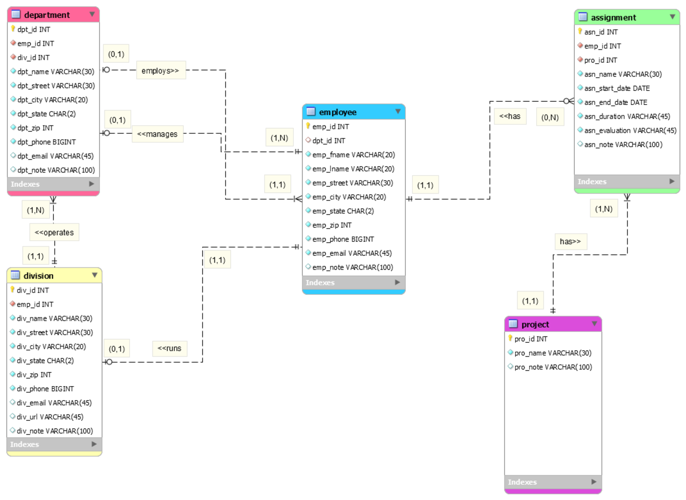

Business Database
My first experience with databases.
For this database development project, I learned how to use MySQL Workbench to create relational entity databases. I also learned skills regarding forward engineering and how to implement a functional database. The biggest challenges that I faced during this project was learning how to use the MySQL application and creating a multi-table database.
